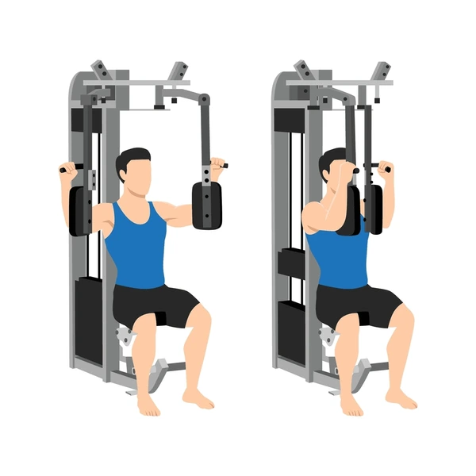

Exercise Description
Lie on a flat bench with a dumbbell in each hand, palms facing each other. Extend your arms above your chest with a slight bend in your elbows. Slowly lower the dumbbells out to the sides, feeling a stretch in your chest, then bring them back together.
Reps and Sets
Beginners: 3 sets of 12-15 reps
Weights: 15-20 kg
Rest time between each set: 45secs
Video Implementation